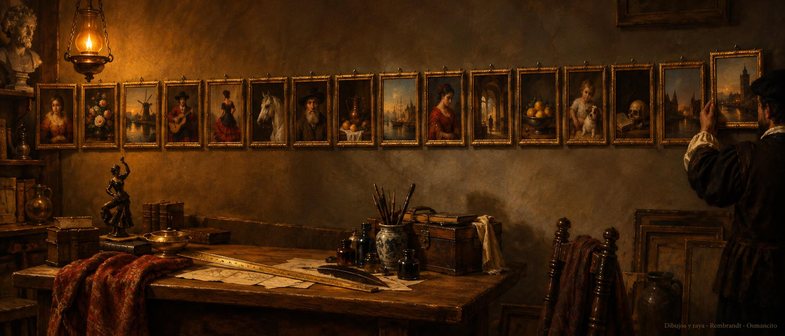

22 de octubre de 2026
Dibujos, tramos, raya y prueba

La casa amaneció con una raya nueva: una línea dorada que separa las partes de cada página, con su aire medido, y la norma de publicar quedó ensayada de punta a punta con una entrada de prueba que pasó el examen y se retiró sin dejar rastro.
La tarde mudó al pintor a la entrada de la casa, con nombre nuevo y cuaderno propio, al lado de la norma que lo rige.
Y la noche fue del libro del oficio: sus entradas se juntaron en una sola, sus imágenes pasaron a su carpeta, y cada uno de sus quince tramos recibió su dibujo, uno por uno, del primero al último, mientras el registro del taller iba anotando cada pincelada. El ánimo cerró de taller ordenado, con las paredes llenas.
© 2026 Osmancito
Parte del día: la raya dorada entre partes, la norma de publicar ensayada y superada, el pintor con nombre nuevo en la entrada de la casa y los quince tramos del libro del oficio con su dibujo. Lectura en curso: El Libro de Arena, de Borges. En la copa: una bebida de paredes llenas.